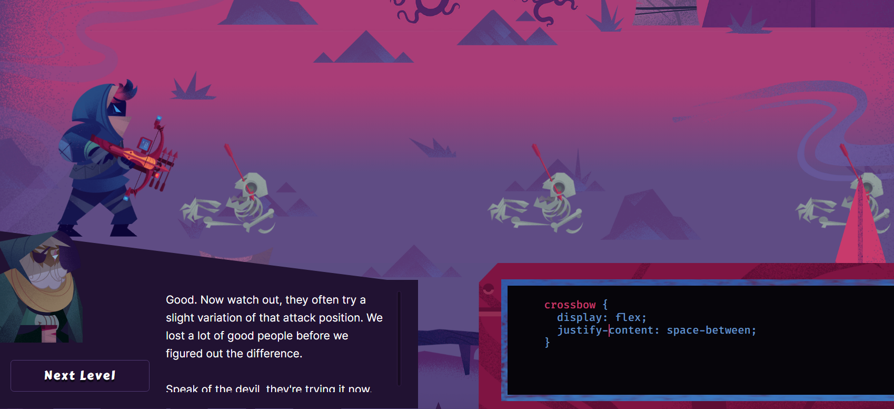
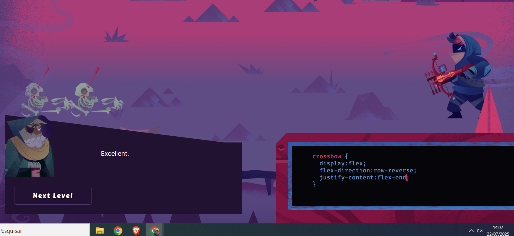
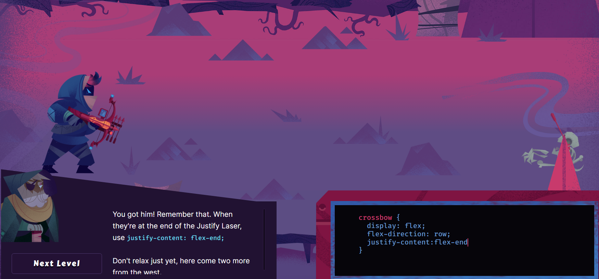
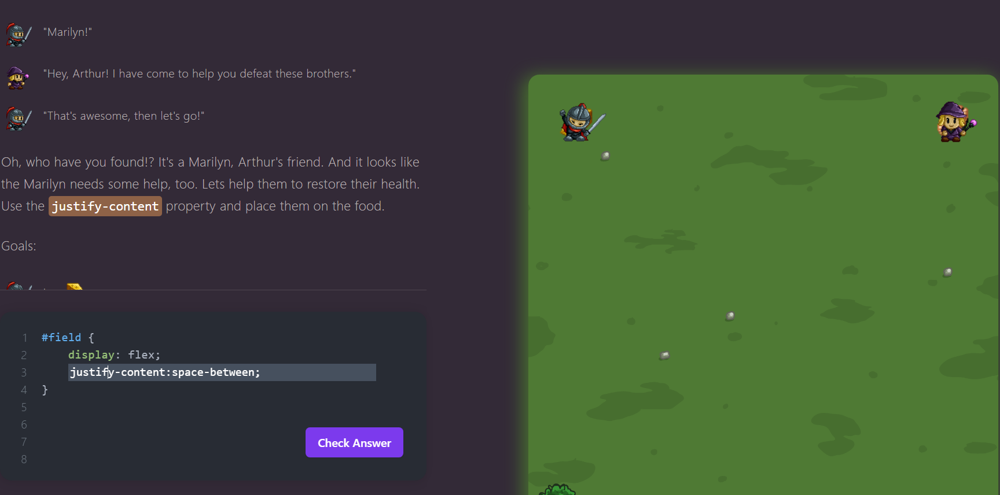
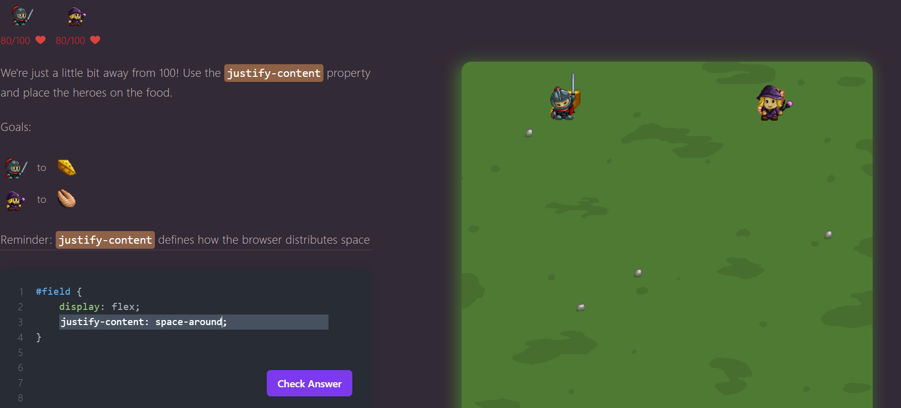
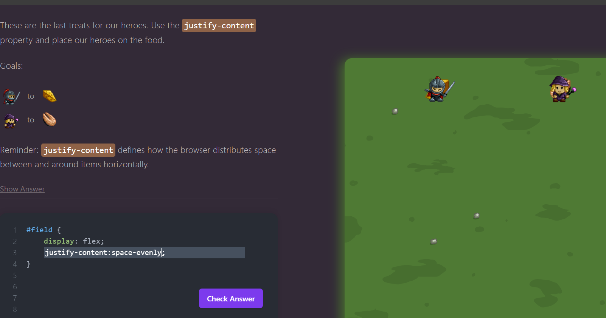

Nome: Fernanda Rodrigus Sales
Nível 1 - Desafiador por introduzir o uso do `justify-content: center`, que alinha elementos horizontalmente no centro.
Nível 6 - Foi necessário utilizar `align-items: center`, o que exigiu atenção à diferença entre eixo principal e cruzado.
Nível 9 - Mistura de `align-items` e `justify-content`, exigindo coordenação de duas propriedades ao mesmo tempo.
Capítulo 2 - Nível 9 - Foi interessante aplicar `justify-content: space-between`, exigindo entendimento de espaçamento proporcional.
Capítulo 2 - Nível 12 - Primeiro desafio com direção reversa (`row-reverse`), que pode confundir quem está começando.
Capítulo 2 - Nível 13 - Necessidade de combinar `flex-direction` e `justify-content`, elevando a complexidade.
display: flex – Define o container como um flex container, ativando o modelo Flexbox.justify-content – Alinha os itens no eixo principal (horizontal por padrão).align-items – Alinha os itens no eixo cruzado (vertical por padrão).flex-direction – Define a direção do eixo principal (row, row-reverse, column, column-reverse).Em um site com um menu de navegação horizontal, utilizaria Flexbox para alinhar os itens com justify-content: space-between, garantindo espaçamento igual entre eles. Para centralizar verticalmente os itens do menu, aplicaria align-items: center. Isso manteria o menu organizado e responsivo independentemente da resolução da tela.